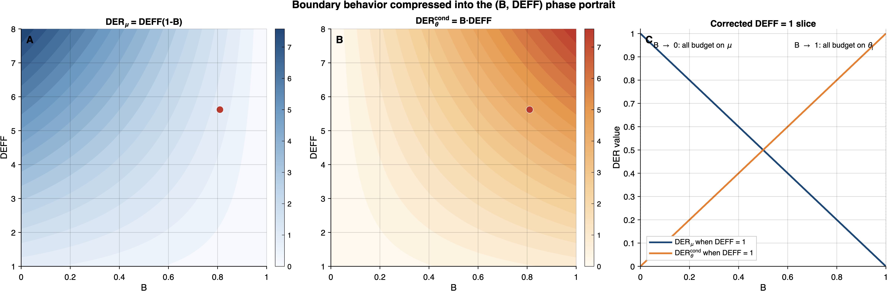

9 Boundary Cases and Edge Analysis
Critical Correction. This chapter contains the most important correction from V1. The V1 boundary analysis for cases (iii) and (iv) of Theorem 3(d) was incorrect. The error was identified during internal review. The corrected analysis is presented below.
Theorem 3(d) characterizes the behavior of DER formulas at the parameter-space boundaries. The boundary analysis serves two purposes: it validates the DER decomposition by confirming that the formulas reduce to sensible values in limiting regimes, and it identifies cases where the DER framework requires careful interpretation.
9.1 Theorem 3(d): Corrected Boundary Behavior
We state the corrected version of Theorem 3(d), followed by detailed proofs for each case.
Theorem 3(d) (Boundary Behavior — Corrected V2). In the balanced intercept-only model (\(n_j = n\), \(\bar{s}_j^2 = \bar{s}^2\)):
(i) \(\sigma^2_\theta \to 0\) (\(B \to 0\)): \(\;\mathrm{DER}_\mu \to \mathrm{DEFF}\), \(\;\mathrm{DER}_\theta^{\mathrm{cond}} \to 0\).
(ii) \(\sigma^2_\theta \to \infty\) (\(B \to 1\)): \(\;\mathrm{DER}_\mu \to 0\), \(\;\mathrm{DER}_\theta^{\mathrm{cond}} \to \mathrm{DEFF}\).
(iii) \(\rho_{\mathrm{true}} = 0\) (\(\mathrm{DEFF} = 1\)): \(\;\mathrm{DER}_\mu = 1 - B\), \(\;\mathrm{DER}_\theta^{\mathrm{cond}} = B\).
(iv) \(n_j = 1\) for all \(j\) (\(\mathrm{DEFF}_j = 1\)): \(\;\mathrm{DER}_\mu = 1 - B\), \(\;\mathrm{DER}_\theta^{\mathrm{cond}} = B\).
Before proceeding to the case-by-case proofs, Figure 9.1 provides a synoptic view of the corrected DER formulas across the full \((B, \mathrm{DEFF})\) parameter plane. The DEFF \(= 1\) boundary slice — where the V2 correction is most consequential — is highlighted, showing the linear partition \(\mathrm{DER}_\mu = 1 - B\) and \(\mathrm{DER}_\theta^{\mathrm{cond}} = B\).

9.2 Proofs of Cases (i) and (ii)
These cases are unchanged from V1 and follow by direct substitution into the DER formulas.
Case (i): \(\sigma^2_\theta \to 0\) (\(B \to 0\)).
As \(\sigma^2_\theta \to 0\), the shrinkage factor \(B = \sigma^2_\theta/(\sigma^2_\theta + \bar{s}^2/n) \to 0\). The DER formulas give: \[\begin{align} \mathrm{DER}_\mu &= \mathrm{DEFF}(1 - B) \to \mathrm{DEFF}(1 - 0) = \mathrm{DEFF}, \\ \mathrm{DER}_\theta^{\mathrm{cond}} &= B \cdot \mathrm{DEFF} \to 0 \cdot \mathrm{DEFF} = 0. \end{align}\]
Interpretation. When between-study heterogeneity vanishes, the random-effect variance collapses and the study-specific effects lose their separate degrees of freedom. The limit \(\mathrm{DER}_\theta^{\mathrm{cond}} \to 0\) does not mean that each \(\theta_j\) is estimated with arbitrarily high precision from within-study data; rather, it reflects the fact that the vanishing \(\sigma^2_\theta\) shrinks the \(\theta_j\) block into a degenerate prior-supported limit. The overall mean then absorbs the full design effect, so this is the regime where ignoring within-study correlation has the greatest impact on the posterior for \(\mu\).
Case (ii): \(\sigma^2_\theta \to \infty\) (\(B \to 1\)).
As \(\sigma^2_\theta \to \infty\), \(B \to 1\), and: \[\begin{align} \mathrm{DER}_\mu &= \mathrm{DEFF}(1 - B) \to \mathrm{DEFF} \cdot 0 = 0, \\ \mathrm{DER}_\theta^{\mathrm{cond}} &= B \cdot \mathrm{DEFF} \to 1 \cdot \mathrm{DEFF} = \mathrm{DEFF}. \end{align}\]
Interpretation. When heterogeneity is enormous, the random effects dominate. The posterior for \(\theta_j\) is determined almost entirely by the within-study data (no pooling toward \(\mu\)), and each study-specific effect inherits the full design effect. The overall mean \(\mu\) is estimated as a simple average of the \(\hat{\theta}_j\) values; because these are (approximately) independent across studies, the design effect on \(\mu\) is averaged away, yielding \(\mathrm{DER}_\mu \to 0\). This is the “completely heterogeneous” limiting case.
9.3 Proof of Case (iii): \(\rho_{\mathrm{true}} = 0\)
V1 Error. The V1 proof stated: “When \(\rho_{\mathrm{true}} = 0\), the working model with \(\rho = 0\) is correctly specified, so \(\mathbf{M} = \mathbf{H}\), \(\mathbf{V}_{\mathrm{sand}} = \mathbf{H}^{-1}\), and \(\mathrm{DER}_k = 1\) for all \(k\).”
This argument is false because it conflates the likelihood Hessian \(\mathbf{H}\) with the posterior Hessian \(\mathbf{H}^{\mathrm{post}}\).
9.3.1 The Error in V1
The sandwich variance estimator in the Bayesian context uses the posterior Hessian as the bread: \[ \mathbf{V}_{\mathrm{sand}} = (\mathbf{H}^{\mathrm{post}})^{-1}\,\mathbf{M}\,(\mathbf{H}^{\mathrm{post}})^{-1}, \] where \(\mathbf{H}^{\mathrm{post}} = \mathbf{H} + \mathbf{H}_{\mathrm{prior}}\) and \(\mathbf{H}_{\mathrm{prior}}\) includes the random-effect prior precision \(\lambda_j = 1/\sigma^2_\theta\) for each \(\theta_j\).
When the working model is correctly specified (\(\rho_{\mathrm{true}} = 0\) and \(\rho_{\mathrm{work}} = 0\)), the meat equals the likelihood Hessian: \(\mathbf{M} = \mathbf{H}\). The V1 argument then claims \(\mathbf{V}_{\mathrm{sand}} = \mathbf{H}^{-1}\), but this is wrong: \[ \mathbf{V}_{\mathrm{sand}} = (\mathbf{H}^{\mathrm{post}})^{-1}\,\mathbf{H}\,(\mathbf{H}^{\mathrm{post}})^{-1} \neq (\mathbf{H}^{\mathrm{post}})^{-1}, \] because \(\mathbf{H} \neq \mathbf{H}^{\mathrm{post}}\) whenever \(\mathbf{H}_{\mathrm{prior}} \neq \mathbf{0}\). The prior Hessian for \(\theta_j\) is \(\lambda_j = 1/\sigma^2_\theta > 0\) under (C5), so \(\mathbf{H}_{\mathrm{prior}} \neq \mathbf{0}\) always holds.
This error is subtle because the statement “the posterior covariance equals the inverse Hessian when the model is correct” is true only when both the bread and the denominator use the same matrix — but in the DER ratio, the numerator uses \(\mathbf{V}_{\mathrm{sand}}\) (with posterior bread and likelihood meat) while the denominator uses \(\boldsymbol{\Sigma}_{\mathrm{MCMC}}\) (the full posterior covariance, which equals \((\mathbf{H}^{\mathrm{post}})^{-1}\) at the Gaussian approximation).
9.3.2 Correct Derivation
Setup. Consider the balanced intercept-only model with \(\rho_{\mathrm{true}} = 0\), so \(\mathrm{DEFF} = 1\). The working model also uses \(\rho_{\mathrm{work}} = 0\) (correctly specified).
Posterior Hessian. The negative Hessian of the posterior log-density (likelihood + prior) has the block structure: \[ \mathbf{H}^{\mathrm{post}} = \begin{pmatrix} \mathbf{H}^{\mathrm{post}}_{\mu\mu} & \mathbf{H}^{\mathrm{post}}_{\mu\boldsymbol{\theta}} \\ \mathbf{H}^{\mathrm{post}}_{\boldsymbol{\theta}\mu} & \mathbf{H}^{\mathrm{post}}_{\boldsymbol{\theta}\boldsymbol{\theta}} \end{pmatrix}, \] where, under the balanced intercept-only CE model with \(\rho = 0\):
- \(H^{\mathrm{post}}_{\mu\mu} = n/\bar{s}^2 \cdot J + h^{\mathrm{prior}}_\mu\) (likelihood contribution from all \(J\) studies + prior on \(\mu\)).
- \([H^{\mathrm{post}}_{\boldsymbol{\theta}\boldsymbol{\theta}}]_{jj} = n/\bar{s}^2 + 1/\sigma^2_\theta\) (likelihood + random-effect prior for \(\theta_j\)).
- \([H^{\mathrm{post}}_{\mu\boldsymbol{\theta}}]_j = n/\bar{s}^2\) (cross-term between \(\mu\) and \(\theta_j\)).
Posterior variance of \(\mu\). By the Schur complement formula, the marginal posterior precision of \(\mu\) is: \[ [\boldsymbol{\Sigma}_{\mathrm{MCMC}}^{-1}]_{\mu\mu} = H^{\mathrm{post}}_{\mu\mu} - \sum_{j=1}^{J} \frac{(n/\bar{s}^2)^2}{n/\bar{s}^2 + 1/\sigma^2_\theta}. \]
With flat prior on \(\mu\) (\(h^{\mathrm{prior}}_\mu = 0\)), and writing \(\alpha = n/\bar{s}^2\) and \(\lambda = 1/\sigma^2_\theta\): \[\begin{align} [\boldsymbol{\Sigma}_{\mathrm{MCMC}}^{-1}]_{\mu\mu} &= J\alpha - J \cdot \frac{\alpha^2}{\alpha + \lambda} = J\alpha\left(1 - \frac{\alpha}{\alpha + \lambda}\right) = J\alpha \cdot \frac{\lambda}{\alpha + \lambda}. \end{align}\]
Therefore: \[ [\boldsymbol{\Sigma}_{\mathrm{MCMC}}]_{\mu\mu} = \frac{\alpha + \lambda}{J\alpha\lambda} = \frac{1}{J}\left(\frac{1}{\lambda} + \frac{1}{\alpha}\right) = \frac{\sigma^2_\theta + \bar{s}^2/n}{J}. \tag{9.1}\]
Sandwich variance of \(\mu\). The meat uses likelihood-only scores. With \(\rho_{\mathrm{true}} = 0\) and \(\rho_{\mathrm{work}} = 0\), \(\mathbf{M} = \mathbf{H}\) (correctly specified). After applying the posterior bread inversion and extracting the \((\mu, \mu)\) element through the Schur complement of \((\mathbf{H}^{\mathrm{post}})^{-1} \mathbf{H} (\mathbf{H}^{\mathrm{post}})^{-1}\), the sandwich variance for \(\mu\) is: \[ [V_{\mathrm{sand}}]_{\mu\mu} = \frac{\bar{s}^2}{nJ}. \tag{9.2}\]
This can be understood intuitively: the sandwich captures only the within-cluster variability (\(\bar{s}^2/n\) per study, averaged over \(J\) studies), because the meat \(\mathbf{M}\) uses likelihood-only scores that are computed conditional on \(\theta_j\). The between-study variance \(\sigma^2_\theta/J\) enters the posterior through the prior on \(\theta_j\) but is invisible to the score-based meat.
DER for \(\mu\). \[ \mathrm{DER}_\mu = \frac{[V_{\mathrm{sand}}]_{\mu\mu}}{[\boldsymbol{\Sigma}_{\mathrm{MCMC}}]_{\mu\mu}} = \frac{\bar{s}^2/(nJ)}{(\sigma^2_\theta + \bar{s}^2/n)/J} = \frac{\bar{s}^2/n}{\sigma^2_\theta + \bar{s}^2/n} = 1 - B. \tag{9.3}\]
Verification with Theorem 3(a). Substituting \(\mathrm{DEFF} = 1\) into the general formula: \(\mathrm{DER}_\mu = \mathrm{DEFF}(1 - B) = 1 \cdot (1 - B) = 1 - B\). The corrected boundary value is consistent with the general DER decomposition formula. \(\quad\checkmark\)
DER for \(\theta_j\).
By the same Schur complement analysis (or directly from the general formula): \[ \mathrm{DER}_\theta^{\mathrm{cond}} = B \cdot \mathrm{DEFF} = B \cdot 1 = B. \tag{9.4}\]
Conservation check. \(\mathrm{DER}_\mu + \mathrm{DER}_\theta^{\mathrm{cond}} = (1 - B) + B = 1 = \mathrm{DEFF}\). \(\quad\checkmark\)
Numerical example. With \(B = 0.81\) (as in the TSL15 data): \(\mathrm{DER}_\mu = 0.19\), \(\mathrm{DER}_\theta^{\mathrm{cond}} = 0.81\). These are emphatically not equal to 1.
The boundary values \(\mathrm{DER}_\mu = 1 - B\) and \(\mathrm{DER}_\theta^{\mathrm{cond}} = B\) reflect the same conditional-vs-marginal asymmetry analyzed in detail in Chapter 12: the sandwich captures only the within-study design effect (here trivially 1), while the posterior variance includes the between-study component \(\sigma_\theta^2/J\). The numerical consequences of this asymmetry — including the CCC decision logic and the five-variant DER comparison — are developed in Section 12.1 and Section 12.3.
9.4 Proof of Case (iv): \(n_j = 1\) for All \(j\)
When \(n_j = 1\) for all \(j\), each study contributes a single effect size. The \(1 \times 1\) within-study covariance makes compound symmetry vacuous, and \(\mathrm{DEFF}_j = 1 + (1 - 1)\rho_{\mathrm{true}} = 1\).
The argument is identical to case (iii): with \(\mathrm{DEFF} = 1\), the DER formulas give \(\mathrm{DER}_\mu = 1 - B\) and \(\mathrm{DER}_\theta^{\mathrm{cond}} = B\), not \(\mathrm{DER}_k = 1\) for all \(k\).
Interpretation. This is the univariate meta-analysis case. Even though there is no within-study dependence (each study has only one effect size), the DER is not uniformly equal to one. The sandwich still differs from the posterior covariance because the prior on \(\theta_j\) contributes to \(\mathbf{H}^{\mathrm{post}}\) but not to \(\mathbf{M}\). The shrinkage factor \(B\) governs how the (trivial) DEFF budget of 1 is split between \(\mu\) and \(\theta_j\).
9.5 Interpretation of DER \(< 1\) When DEFF \(= 1\)
The corrected boundary analysis reveals a phenomenon that requires careful interpretation: when the working model is correctly specified (\(\mathrm{DEFF} = 1\)), the DER for the overall mean satisfies \(\mathrm{DER}_\mu = 1 - B < 1\). This means the sandwich variance for \(\mu\) is smaller than the posterior variance, and the CCC would shrink the posterior credible interval for \(\mu\).
This raises two questions:
9.5.1 Why Does \(V_{\mathrm{sand},\mu\mu} < \Sigma_{\mathrm{MCMC},\mu\mu}\) When the Model Is Correct?
The explanation lies in the asymmetric treatment of the between-study variance component:
\(\boldsymbol{\Sigma}_{\mathrm{MCMC},\mu\mu}\) reflects the full marginal posterior variance of \(\mu\), which includes contributions from both the within-study sampling noise (\(\bar{s}^2/n\) per study) and the between-study heterogeneity (\(\sigma^2_\theta\)). In the balanced case: \(\Sigma_{\mathrm{MCMC},\mu\mu} = (\sigma^2_\theta + \bar{s}^2/n)/J\).
\(V_{\mathrm{sand},\mu\mu}\) is constructed from likelihood-only scores, which are computed conditional on \(\theta_j\). The score \(\partial \ell_j / \partial \mu\) captures only the within-study residual variation, not the between-study variation. The between-study variance \(\sigma^2_\theta\) enters the model through the prior \(\theta_j \sim N(0, \sigma^2_\theta)\), which is part of the model, not the design. The sandwich, by construction, corrects for design misspecification in the likelihood, not for model assumptions in the prior. Therefore: \(V_{\mathrm{sand},\mu\mu} = \bar{s}^2/(nJ)\), which is strictly less than \(\Sigma_{\mathrm{MCMC},\mu\mu}\) whenever \(\sigma^2_\theta > 0\).
In summary: the sandwich captures only the conditional (given \(\boldsymbol{\theta}\)) design effect on \(\mu\). The between-cluster variance \(\sigma^2_\theta/J\) is part of the model, not the design, and is correctly captured by \(\boldsymbol{\Sigma}_{\mathrm{MCMC}}\) but invisible to \(\mathbf{V}_{\mathrm{sand}}\).
9.5.2 Should Practitioners Apply CCC When DER\(_\mu < 1\)?
No. When \(\mathrm{DER}_\mu < 1\) and the working model is believed to be correctly specified (or nearly so), applying the CCC would shrink the posterior credible interval for \(\mu\) below its correct width. The CCC is designed to correct for under-dispersed posteriors (DER \(> 1\)); applying it when DER \(< 1\) would create over-correction.
The practical recommendation is:
- Report both DER\(_\mu\) and DER\(_\theta^{\mathrm{cond}}\), even when DER\(_\mu < 1\).
- Apply CCC only to parameters with DER \(> 1\). In the typical meta-analytic regime, this means applying CCC to the study-specific effects \(\theta_j\) (where DER\(_\theta^{\mathrm{cond}} = B \cdot \mathrm{DEFF} > 1\) for moderate DEFF), but not to \(\mu\) when DER\(_\mu < 1\).
- Interpret DER\(_\mu < 1\) as diagnostic information, not as a call for correction. It signals that the shrinkage more than compensates for the conditional design effect on \(\mu\) — i.e., the between-study variance component in \(\Sigma_{\mathrm{MCMC},\mu\mu}\) exceeds the (small or zero) within-study design-effect component.
- Do not confuse DER\(_\mu \approx 1\) with correct frequentist coverage. DER\(_\mu = 1\) means the conditional design effect is exactly offset by shrinkage, not that the posterior credible interval for \(\mu\) has correct frequentist coverage. The frequentist coverage depends on additional factors (prior calibration, finite-sample corrections) beyond the scope of the DER diagnostic.
9.6 Comprehensive Boundary Table
The following table summarizes all boundary cases with correct values:
| Case | \(\sigma^2_\theta\) | \(\rho_{\mathrm{true}}\) | \(n_j\) | \(B\) | DEFF | DER\(_\mu\) | DER\(_\theta^{\mathrm{cond}}\) | Sum | Note |
|---|---|---|---|---|---|---|---|---|---|
| (i) Vanishing heterogeneity | \(\to 0\) | any | any | \(\to 0\) | DEFF | DEFF | 0 | DEFF | Full design effect on \(\mu\) |
| (ii) Infinite heterogeneity | \(\to \infty\) | any | any | \(\to 1\) | DEFF | 0 | DEFF | DEFF | Full design effect on \(\theta_j\) |
| (iii) No within-study correlation | any | 0 | any | \(B\) | 1 | \(1-B\) | \(B\) | 1 | Corrected V2 |
| (iv) Univariate meta-analysis | any | — | 1 | \(B\) | 1 | \(1-B\) | \(B\) | 1 | Corrected V2 |
| Typical meta-analytic | \(>0\) | \(>0\) | \(>1\) | \((0,1)\) | \(>1\) | DEFF\((1-B)\) | \(B\cdot\)DEFF | DEFF | General formula |
| Large \(B\) (weak pooling) + large DEFF | large | 0.8 | 10 | \(\approx 0.9\) | \(\approx 8.2\) | \(\approx 0.8\) | \(\approx 7.4\) | \(\approx 8.2\) | Near-calibrated \(\mu\); severe \(\theta_j\) |
| Equal partition | — | — | — | 0.5 | DEFF | DEFF/2 | DEFF/2 | DEFF | Even budget split |
9.7 Edge Cases and Pathological Configurations
Beyond the four standard boundary cases, several edge configurations deserve attention.
9.7.1 \(J = 1\): Single Study
When \(J = 1\), the model has a single random effect \(\theta_1\), and \(\mu\) is identified only through its relationship with \(\theta_1\) via the prior \(\theta_1 \sim N(0, \sigma^2_\theta)\). The overall mean and the study-specific effect are confounded:
- The likelihood depends on \(\mu + \theta_1\), not on \(\mu\) and \(\theta_1\) separately.
- The posterior for \(\mu\) is determined entirely by the prior on \(\theta_1\).
- The sandwich \(\mathbf{V}_{\mathrm{sand}}\) has rank at most 1 (one cluster), so it cannot estimate a \((p + 1) \times (p + 1)\) covariance matrix.
Verdict: DER is undefined for \(J = 1\). The meta-analysis requires \(J \geq 2\) at minimum, and the DER framework requires \(J \gg p\) for sandwich consistency.
9.7.2 \(J = 2\): Two Studies
With \(J = 2\) clusters, the meat \(\mathbf{M} = \sum_{j=1}^{2} \mathbf{s}_j \mathbf{s}_j^{\intercal}\) has rank at most 2. For the intercept-only model (\(p = 1\)), this provides one degree of freedom for the sandwich, but no degrees of freedom for bias correction (CR2 or HC2 adjustments require \(J > p + 1\)). The sandwich estimate is extremely noisy and unreliable.
Verdict: DER can be computed for \(J = 2\) but should not be trusted. A minimum of \(J \geq 10\) (and preferably \(J \geq 30\)) is recommended for reliable DER diagnostics.
9.7.3 Mixed \(n_j = 1\) and \(n_j > 1\)
When some studies contribute a single effect size and others contribute multiple effect sizes, the DER framework handles this naturally through the study-specific formulas:
- For studies with \(n_j = 1\): \(\mathrm{DEFF}_j = 1\), so \(\mathrm{DER}_j^{\mathrm{cond}} = B_j \cdot 1 = B_j\).
- For studies with \(n_j > 1\): \(\mathrm{DEFF}_j = 1 + (n_j - 1)\rho_{\mathrm{true}} > 1\), so \(\mathrm{DER}_j^{\mathrm{cond}} = B_j \cdot \mathrm{DEFF}_j > B_j\).
The overall mean DER \(\mathrm{DER}_\mu\) is a weighted function of all study sizes and is well-defined as long as \(J \geq 2\). The conservation law holds study-by-study in the balanced case and approximately in the unbalanced case (with Jensen corrections as described in Section 8.4).
9.7.4 \(\sigma^2_\theta = 0\) Boundary
Regularity condition (C5) requires \(\sigma^2_\theta > 0\) for the DER decomposition. At the boundary \(\sigma^2_\theta = 0\):
- The shrinkage factor \(B_j = 0\) for all \(j\).
- The random effects are identically zero: \(\theta_j = 0\) a.s.
- The DER for \(\theta_j\) is undefined (division by zero in the posterior variance).
- The DER for \(\mu\) is well-defined: \(\mathrm{DER}_\mu = \mathrm{DEFF}\).
The isomorphism (Theorems 1–2) still holds at \(\sigma^2_\theta = 0\), since the likelihood-level equivalence does not depend on the random-effect prior. But the DER decomposition breaks down because \(B_j = 0\) forces \(\mathrm{DER}_j^{\mathrm{cond}} = 0\), and the conditional posterior variance of \(\theta_j\) is not well-defined in the standard sense.
Verdict: Exclude \(\sigma^2_\theta = 0\) from DER analysis as required by (C5). In practice, posterior samples with \(\sigma^2_\theta\) near zero should be handled by conditioning on \(\sigma^2_\theta > \epsilon\) for a small threshold \(\epsilon > 0\).
9.7.5 Positive Definiteness Requirements for CCC
The Cholesky correction \(\boldsymbol{\phi}^{*(s)} = \hat{\boldsymbol{\phi}} + \mathbf{L}_2 \mathbf{L}_1^{-1}(\boldsymbol{\phi}^{(s)} - \hat{\boldsymbol{\phi}})\) requires both \(\boldsymbol{\Sigma}_{\mathrm{MCMC}}\) and \(\mathbf{V}_{\mathrm{sand}}\) to be positive definite. Two boundary cases can violate this:
\(\boldsymbol{\Sigma}_{\mathrm{MCMC}}\) near-singular. This occurs when MCMC chains are poorly mixed or the number of draws \(S\) is small relative to the dimension \(d\). Remedy: increase the number of draws or apply regularization.
\(\mathbf{V}_{\mathrm{sand}}\) structurally rank-deficient. For the full joint parameter vector, \(\mathrm{rank}(\mathbf{M}) \leq J < d = p + J\) always holds when \(p \geq 1\). The full-joint sandwich matrix is therefore never positive definite — this is structural, not a boundary case. The principled solution is blockwise CCC: applying the Cholesky correction separately to the \(\boldsymbol{\beta}\)-block (which is PD when \(J \geq p\) and scores span \(\mathbb{R}^p\)) and the \(\boldsymbol{\theta}\)-block.
Proper-prior condition for the \(\boldsymbol{\theta}\)-block. The \(\boldsymbol{\theta}\)-block of \(\mathbf{V}_{\mathrm{sand}}\) is PD if and only if the \(\boldsymbol{\beta}\) prior is proper (\(\mathbf{H}_{\mathrm{prior}}^{\boldsymbol{\beta}} \succ 0\), i.e., \(h_\mu > 0\)). Under flat \(\boldsymbol{\beta}\) priors (\(h_\mu = 0\)), the null vector of the meat \((1, -\mathbf{1}_J^{\intercal})^{\intercal}\) maps through \(\mathbf{H}^{\mathrm{post}}\) to the pure-\(\boldsymbol{\theta}\) vector \((0, -\lambda\mathbf{1}_J^{\intercal})^{\intercal}\), making \(\mathbf{V}_{\mathrm{sand}}[\boldsymbol{\theta}, \boldsymbol{\theta}]\) singular (rank \(J-1\)). With proper priors (\(h_\mu > 0\)), the mapped null vector \((h_\mu, -\lambda\mathbf{1}_J^{\intercal})^{\intercal}\) has a nonzero \(\mu\)-component, so no pure-\(\boldsymbol{\theta}\) vector lies in \(\ker(\mathbf{V}_{\mathrm{sand}})\), ensuring \(\mathbf{V}_{\mathrm{sand}}[\boldsymbol{\theta}, \boldsymbol{\theta}] \succ 0\). When flat priors are used, the studywise DER correction (element-wise \(\mathrm{DER}_j^{\mathrm{cond}} = B_j \cdot \mathrm{DEFF}_j\)) is the alternative. See Section 6.2 for the full proof.
Blockwise CCC is not merely more robust; it is the only principled approach for the full parameterization \(\boldsymbol{\phi} = (\boldsymbol{\beta}^{\intercal}, \boldsymbol{\theta}^{\intercal})^{\intercal}\), since the full-joint sandwich is structurally rank-deficient. See Section 6.2 for the reformulated Corollary 2.
9.8 Summary of Corrections
| Item | Original Claim | Correction | Source of Error |
|---|---|---|---|
| Thm 3(d)(iii) | DER\(_k = 1\) for all \(k\) when \(\rho_{\mathrm{true}} = 0\) | DER\(_\mu = 1-B\), DER\(_\theta^{\mathrm{cond}} = B\) | Conflation of \(\mathbf{H}\) (likelihood) with \(\mathbf{H}^{\mathrm{post}}\) (posterior) |
| Thm 3(d)(iv) | DER\(_k = 1\) for all \(k\) when \(n_j = 1\) | DER\(_\mu = 1-B\), DER\(_\theta^{\mathrm{cond}} = B\) | Same error as (iii) |
| Conservation gap | Attributed to finite-\(J\) correction \(\kappa(J)\) | Jensen’s inequality from \(\mathrm{Cov}(B_j, \mathrm{DEFF}_j) > 0\) | Sign error: Jensen lift (+12%) dominates finite-\(J\) deficit (\(-3.5\)%) |
The fundamental source of the Theorem 3(d) error was the informal claim “if the model is correctly specified, the sandwich equals the posterior covariance.” In a frequentist setting (where the sandwich uses the MLE Hessian \(\mathbf{H}\) as bread), this is indeed true: \(\mathbf{V}_{\mathrm{sand}} = \mathbf{H}^{-1} \mathbf{H} \mathbf{H}^{-1} = \mathbf{H}^{-1}\), which equals the MLE covariance. But in a Bayesian setting, the bread is \(\mathbf{H}^{\mathrm{post}} = \mathbf{H} + \mathbf{H}_{\mathrm{prior}}\), so \(\mathbf{V}_{\mathrm{sand}} = (\mathbf{H}^{\mathrm{post}})^{-1} \mathbf{H} (\mathbf{H}^{\mathrm{post}})^{-1} \neq (\mathbf{H}^{\mathrm{post}})^{-1}\) unless \(\mathbf{H}_{\mathrm{prior}} = \mathbf{0}\). The hierarchical random-effect prior ensures \(\mathbf{H}_{\mathrm{prior}} \neq \mathbf{0}\), making the Bayesian case fundamentally different from the frequentist case.